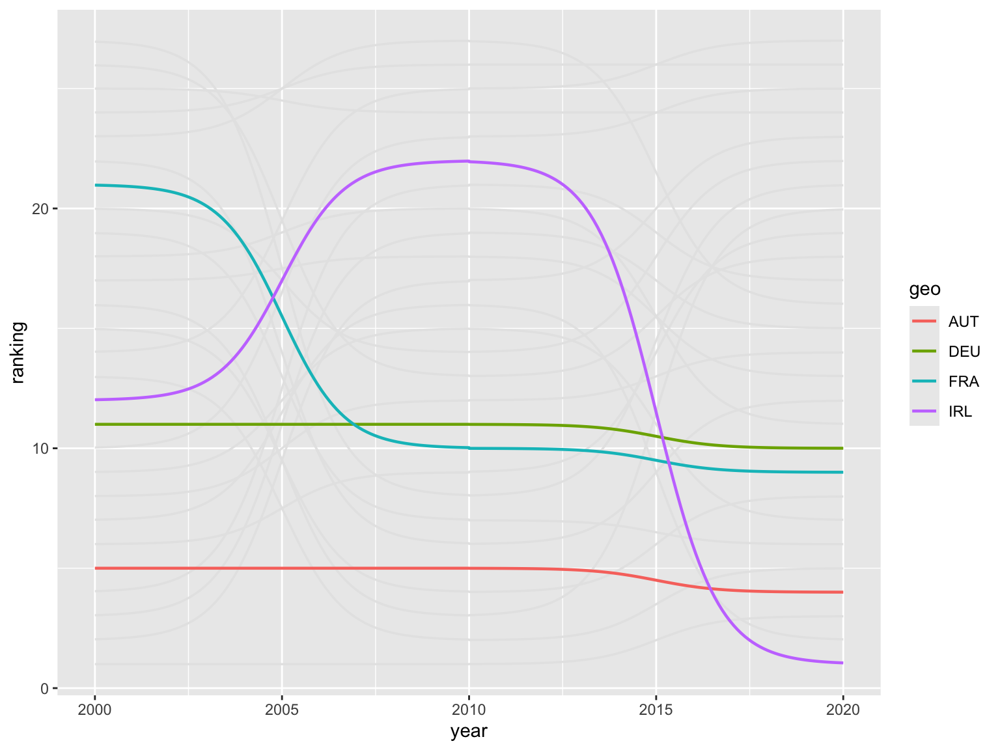
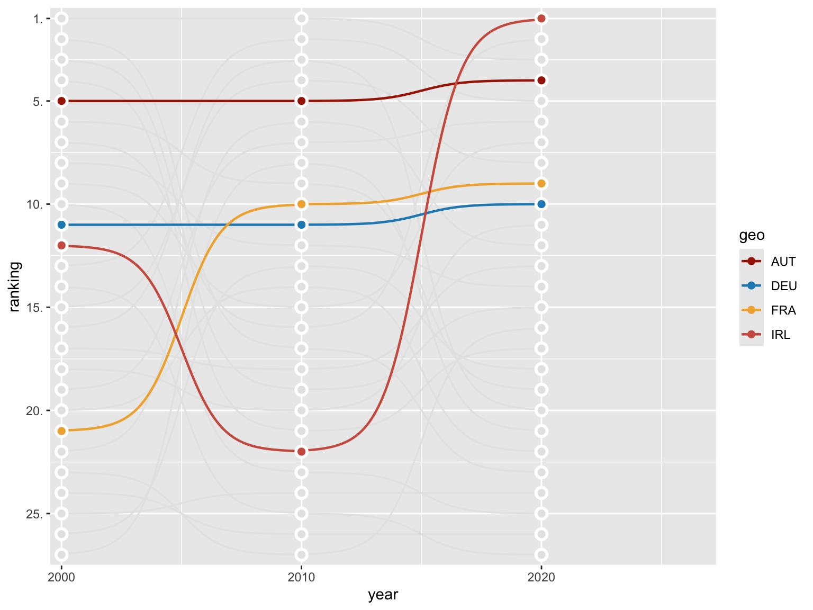

Libraries
This chart requires a few libraries, especially the ggbump package. This package provides a
geom_bump() function that allows to build ggbump
charts easily.
Install it with install.packages("ggbump").
Dataset
The dataset is retrieved from the rdbnomics package and
is from the AMECO database.
It contains the share of gross fixed capital formation (GFCF) in % of GDP for a selection of European countries. The data is available for the years 2000, 2010 and 2020.
This pre-processing step is necessary to rank the
countries according to their share of GFCF in % of GDP. The
rank() function is used to create a ranking
variable for each year.
The countrycode() function is used to convert the ISO3
country codes to country names in German.
allcty <- codelist |> filter(!is.na(eu28)) |> pull(iso3c) |> tolower()
gfcf_private <- rdb(provider_code = "AMECO", dataset_code = "UIGP",
dimensions = list(geo = allcty, unit = "mrd-ecu-eur"))
gdp <- rdb(provider_code = "AMECO", dataset_code = "UVGD",
dimensions = list(geo = allcty, unit = "mrd-ecu-eur"))
data <- bind_rows(gfcf_private, gdp) |>
mutate(variable = case_when(
str_detect(dataset_name, "private") ~ "GFCF_p",
TRUE ~ "GDP")) |>
select(geo, variable, period, value) |>
pivot_wider(names_from = variable, values_from = value) |>
mutate(share_p = GFCF_p/GDP*100, year = year(period), geo = toupper(geo))
ranked <- data |>
filter(year %in% c(2000, 2010, 2020)) |>
mutate(ranking = rank(desc(share_p), ties.method = "first"), .by = year) |>
mutate(ctry = countrycode(geo, "iso3c", "country.name.de"),
ctry = ifelse(geo == "CZE", "Tschechien", ctry))
selected <- c("AUT", "DEU", "IRL", "FRA")Simple bump plot
Let’s start by creating a simple bump plot. The
geom_bump() function is used to create the chart. The
smooth argument is used to control the
smoothness of the lines.
ranked |>
ggplot(aes(x = year, y = ranking, group = geo)) +
geom_bump(linewidth = 0.6, color = "gray90", smooth = 6) +
geom_bump(aes(color = geo), linewidth = 0.8, smooth = 6,
data = ~. |> filter(geo %in% selected))
Change order and add individual points
The geom_point() function is utilized to add
individual points to the chart, while the
geom_text() function is employed to add
labels to the chart.
The slice_max() function is used to select the
top country for each year. The filter()
function is used to select the countries that are highlighted in the
chart.
ranked |>
ggplot(aes(x = year, y = ranking, group = geo)) +
geom_bump(linewidth = 0.6, color = "gray90", smooth = 6) +
geom_bump(aes(color = geo), linewidth = 0.8, smooth = 6,
data = ~. |> filter(geo %in% selected)) +
geom_point(color = "white", size = 4) +
geom_point(color = "gray90", size = 2) +
geom_point(aes(color = geo), size = 2,
data = ~. |> filter(geo %in% selected)) +
geom_text(aes(label = ctry), x = 2021, hjust = 0,
color = "gray50", family = "Roboto Condensed", size = 3.5,
data = ranked |> slice_max(year, by = geo) |>
filter(!geo %in% selected)) +
geom_text(aes(label = ctry), x = 2021, hjust = 0,
color = "black", family = "Roboto Condensed", size = 3.5,
data = ranked |> slice_max(year, by = geo) |>
filter(geo %in% selected)) +
scale_color_manual(values = met.brewer("Juarez")) +
scale_x_continuous(limits = c(1999.8, 2027), expand = c(0.01,0),
breaks = c(2000, 2010, 2020)) +
scale_y_reverse(breaks = c(25,20,15,10,5,1), expand = c(0.02,0),
labels = number_format(suffix = "."))
Change theme and add annotations
The theme_minimal() function is employed to alter the
chart’s theme. Conversely, the theme()
function is utilized to eliminate grid lines and the
legend.
The labs() function is designed to incorporate a
title, subtitle, and
caption into the chart.
plot <- ranked |>
ggplot(aes(x = year, y = ranking, group = geo)) +
geom_bump(linewidth = 0.6, color = "gray90", smooth = 6) +
geom_bump(aes(color = geo), linewidth = 0.8, smooth = 6,
data = ~. |> filter(geo %in% selected)) +
geom_point(color = "white", size = 4) +
geom_point(color = "gray90", size = 2) +
geom_point(aes(color = geo), size = 2,
data = ~. |> filter(geo %in% selected)) +
geom_text(aes(label = ctry), x = 2021, hjust = 0,
color = "gray50", family = "Roboto Condensed", size = 3.5,
data = ranked |> slice_max(year, by = geo) |>
filter(!geo %in% selected)) +
geom_text(aes(label = ctry), x = 2021, hjust = 0,
color = "black", family = "Roboto Condensed", size = 3.5,
data = ranked |> slice_max(year, by = geo) |>
filter(geo %in% selected)) +
scale_color_manual(values = met.brewer("Juarez")) +
scale_x_continuous(limits = c(1999.8, 2027), expand = c(0.01,0),
breaks = c(2000, 2010, 2020)) +
scale_y_reverse(breaks = c(25,20,15,10,5,1), expand = c(0.02,0),
labels = number_format(suffix = ".")) +
labs(x = NULL, y = NULL,
title = toupper("Investitionstätigkeit in der EU"),
subtitle = "Ranking nach Bruttoanlageinvestitionen in % des BIP",
caption = "Anm.: Investionen des privaten Sektors. Daten: AMECO Grafik: @matschnetzer") +
theme_minimal(base_family = "Roboto Condensed", base_size = 12) +
theme(legend.position = "none",
panel.grid = element_blank(),
plot.title.position = "plot",
plot.title = element_text(size = 14, hjust = .5),
plot.subtitle = element_text(size = 10, hjust = .5),
plot.caption = element_text(size = 8))
ggsave("img/graph/web-bump-plot-with-highlights.png", width = 4, height = 8, dpi = 320, bg = "white")
Going further
You might be interested in:
- learning how to use the ggbump package
- the basics of bump plots
- how to customize bump plots